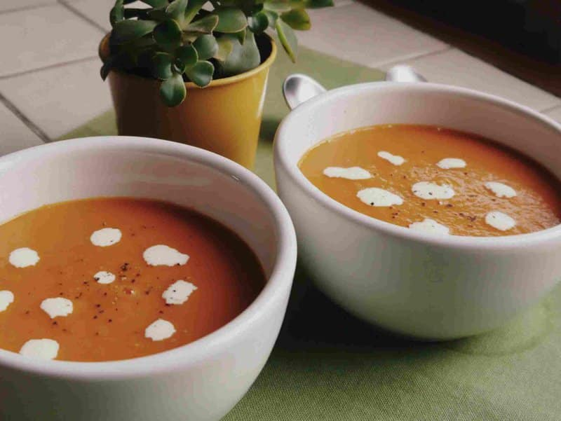
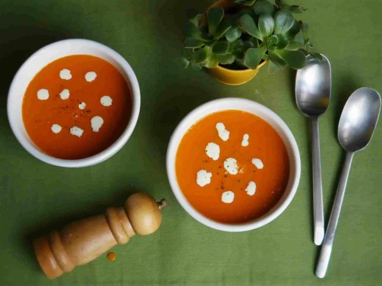

Bienvenidos a una nueva edición de Paulina Cocina! Esta vez nos vamos a poner detallistas con la sopa de tomate.
Sí, porque lo queremos mucho y merece ser preparado y servido como corresponde.
Esta sopa es muy muy rica eh, pero si resulta ser que tenés algún problema con el tomate, acá te dejo otras ideas de sopas cremas para preparar y degustar.
También les comento que Paulina Cocina tiene un hermoso canal de YouTube al que sube recetas semanalmente! si subscribirse, pueden hacerlo aquí.
Sin mucho más para agregar, me despido y los dejo con la protagonista de este artículo: La receta de sopa de tomate.
Con amor,
Juanita.
El primer truco es para que la sopa de tomate no quede sosa: en lugar de poner los tomates a hervir con el caldo directamente, los salteamos antes, primero sin aceite, para que se “asen” y luego con aceite para que se doren. Esto es porque así la sopa tomará un sabor más particular, a vegetales salteados y no el sabor (aburrido) de los vegetales hervidos.
Antes que nada les digo que la palabra chirla es genial y que me alegro de poder usarla. Ahora el truco: la mayoría de ingredientes que lleva esta sopa de tomate son muy líquidos: el tomate, la cebolla… Entonces, lo común al licuarla sería que nos quede una sopa muy líquida. Que no está mal, para nada. Pero a mí me gusta más cremosa y consistente. La forma de darle esta consistencia es agregándole una papa (media, en este caso). No interferirá con los sabores de la sopa de tomate y quedará con más cuerpo, sin llegar a ser una crema de tomates.
Resulta que a una le dicen tomate y piensa en un rojo intenso. Ese es el color que queremos para nuestra sopa de tomates. Y también queremos que tenga un sabor intenso, que el sabor del tomate no se vaya en el hervor. Bueno, esto se lo damos agregando puré de tomates y pimentón (que es habitual en las sopas de tomate) y también ¡dos tomates secos! Esto último mejorará mucho su sabor.
Para que la sopa de tomate no quede ácida por la acidez natural de tomate, agregamos 1 cdita. de azúcar. También podemos quitarle la acidez con un trozo de zanahoria, en este caso lo pondríamos junto con la papa. Este truco podés usarlo para cuando hacés salsa de tomate para pastas.
